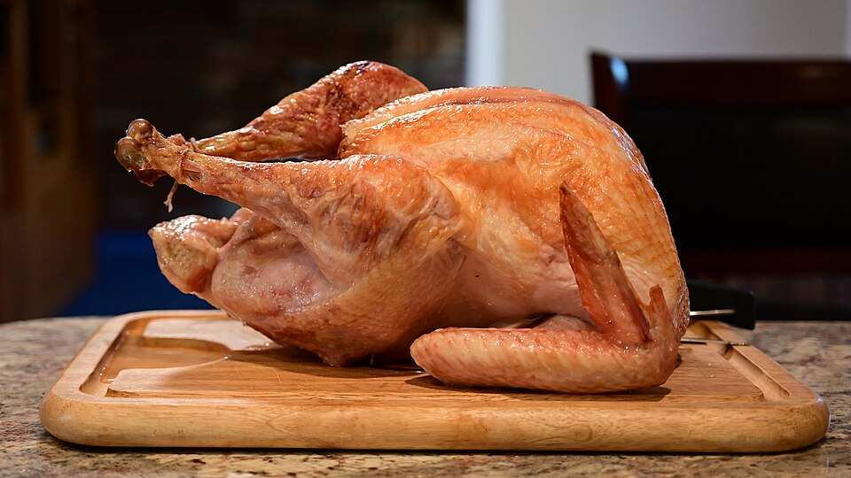

Aves · Outras aves
Peru real

Ingredientes
- 1 peru de cerca de 3 kg, limpo
- 1 limão
- Sal e molho de pimenta a gosto
- 1 folha de louro
- 2 dentes de alho amassados
- 1 xícara (chá) de vinho branco seco
- Suco de ½ laranja
- Recheio: 1 colher (sopa) de margarina
- 300 g de linguiça fresca
- Miúdos do peru, picados
- 3 maçãs
- 1 cebola picada
- 1 pote de geleia de cereja
- Sal a gosto
- 2 colheres (sopa) de conhaque
- ½ xícara (chá) de maionese
- Guarnição: pêssegos em calda, folhas de salsão, flores de legumes e cerejas em calda
Modo de preparo
- Esfregue o peru com limão por dentro e por fora e lave bem. Misture sal, molho de pimenta, louro, alho, vinho e suco de laranja; tempere e deixe marinar de um dia para o outro.
- Doure a linguiça na margarina, junte os miúdos e frite. Acrescente maçãs e cebola picadas; doure um pouco mais. Junte a geleia, sal e conhaque; misture e retire do fogo.
- Recheie o peru, cose e pincele com maionese. Asse em forno médio, regando com a vinha-d’alho restante. Cubra com papel-alumínio por 1 h 30; retire o papel e asse mais 1 h.
- Leve à travessa e enfeite com pêssegos, salsão, legumes e cerejas.
Observação: recorte com produtos Cica; use geleia, maionese, pêssegos e cerejas equivalentes.